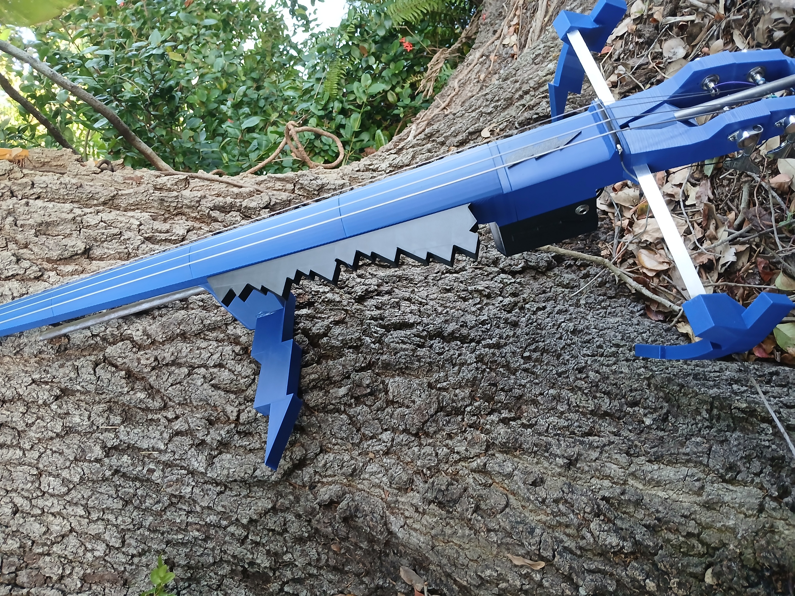

3D-Printed Electric Lightning Cello: ready to play!
$975.00 USD
Buy on EtsyCheck Etsy for current pricing and availability.



Bold by design
Designed and built by Vertex Luthier Noah Connell, this one-of-a-kind electric cello stands out with its bold, lightning-inspired style. Sleek and eye-catching, it is ideal for players who want their instrument to stand out as much as their music.
Designed from scratch for a wide range of playing styles, the body is 3D printed in durable PLA and reinforced with an internal steel rod for lasting strength. Bass guitar tuners and an adjustable endpin that collapses all the way into the body make transport easy.
Plug in and play
An onboard preamp lets you plug straight into your bass amp or headphone amp. Connect to your amp of choice and start performing.
Case and bow are not included. Any standard cello bow works.
Make it your own
Looking for something custom? Message us on Etsy with questions or to design a completely custom electric cello. Playful, fun, or intense: from dragons to puppies, we can match your style.